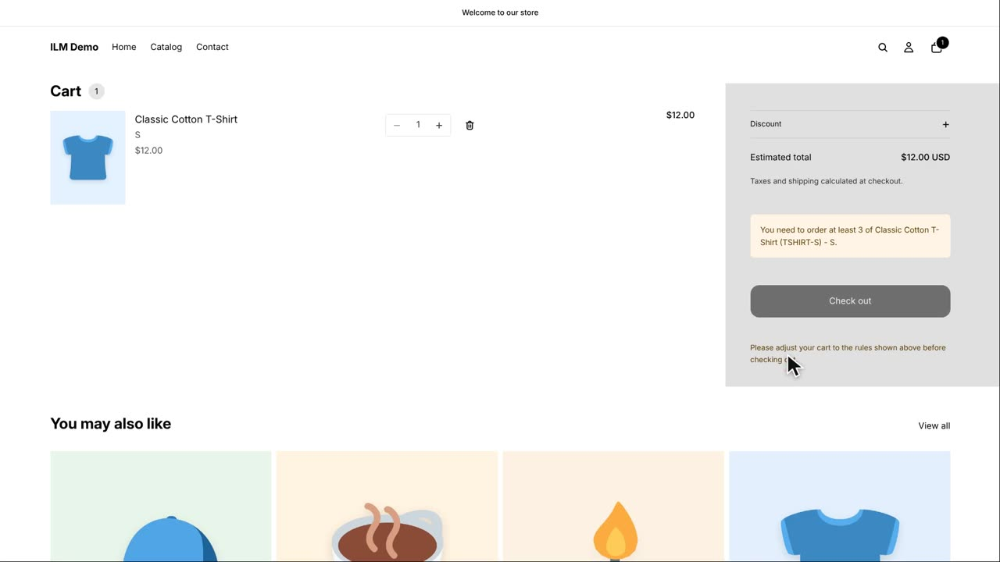
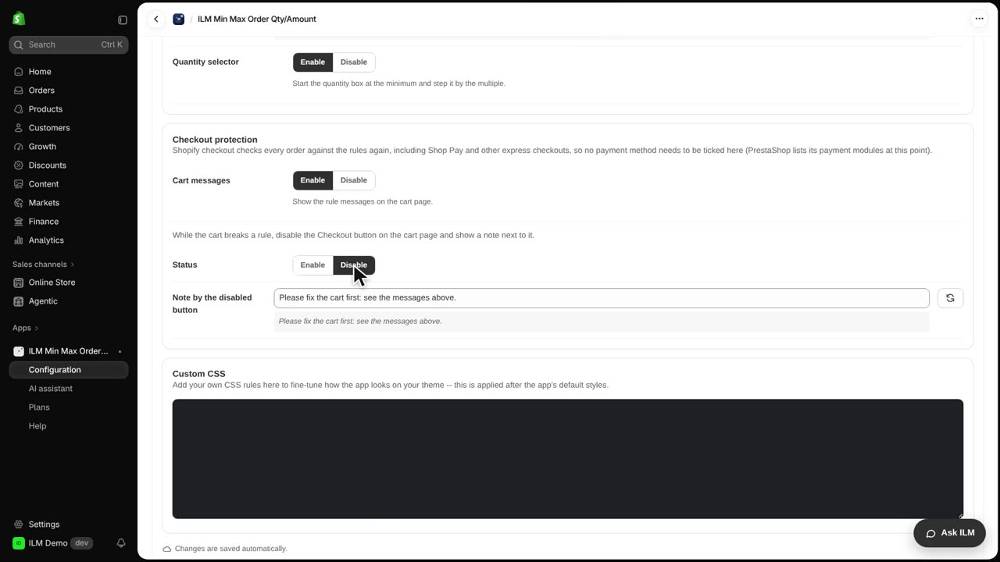
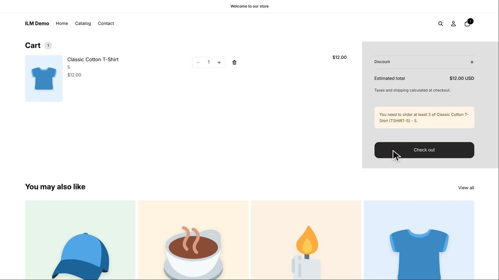
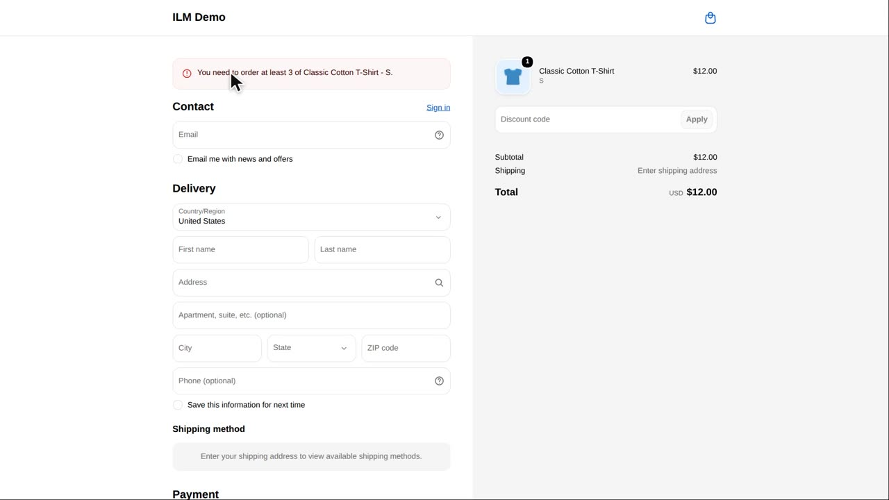
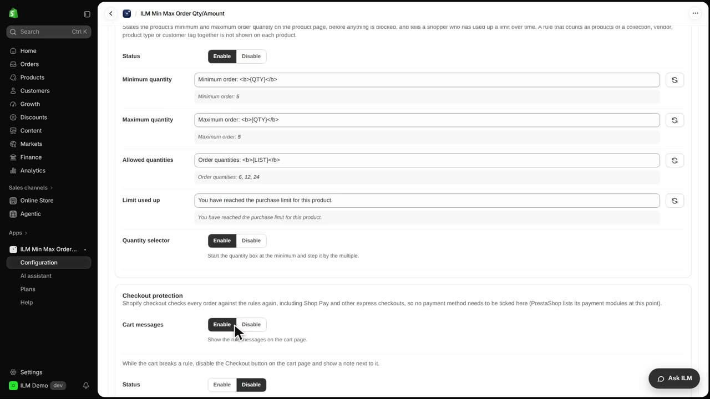

Checkout protection decides what the cart page does while a rule is broken, and it makes sure the shopper cannot slip past your limits. Even if someone tries an express checkout, Shopify checks the rules again, so an order that breaks your minimum can never get through. Today we will use a rule that asks for at least three of the Classic Cotton T-Shirt, and we will watch the cart and the checkout react.
Here is the cart with just one Classic Cotton T-Shirt in it. The cart shows a message explaining the problem, the Checkout button is locked, and a short note sits right next to it.

Now in the app, open Configuration and then the Advanced tab, and find the Checkout protection card. In the field Note by the disabled button, type the sentence you want shoppers to read beside the locked button. Here we type a friendly reminder to fix the cart first and check the messages above, then press Tab to save it.
Still in the Checkout protection card, find the Status group and choose Disable. This turns the button lock off, so the Checkout button stays clickable and the shopper is allowed to continue toward checkout.

Back on the storefront cart, the Checkout button is now active and can be clicked.

Shopify checkout refuses the order and shows the same message, asking for at least three of the item. This also covers Shop Pay and other express checkout buttons, so there is no way around your rule.

Finally, the Cart messages group at the top of the card switches the messages on the cart page on or off. Turn it off if you only want the block at checkout, or keep it on so shoppers see the problem early.
